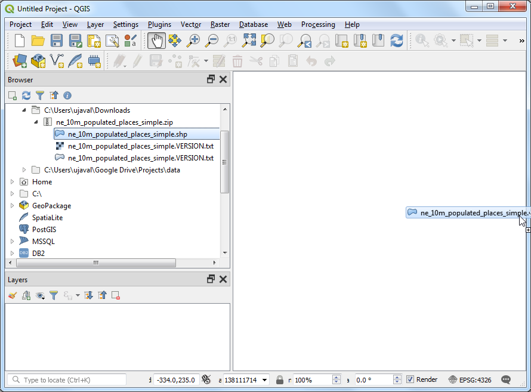

Ujaval Gandhi
Ujaval GandhiWorking with Attributes (QGIS3)¶
GIS data has two parts - features and attributes. Attributes are structured data about each feature. This tutorial shows how to view the attributes of a GIS vector layer and do basic queries on them in QGIS.
Overview of the task¶
The dataset for this tutorial contains information about populated places of the world. The task is to query and find all the capital cities in the World that have a population greater than 1 million and save the resulting subset as a GeoJSON file.
Other skills you will learn¶
Select features from a layer using expressions.
Using the Attributes toolbar.
Exporting selected features in a layer.
Get the data¶
Natural Earth provides a Populated Places dataset. Download the simple (less columns) dataset.
For convenience, you may directly download a copy of the dataset from the link below:
ne_10m_populated_places_simple.zip
Data Source [NATURALEARTH]
Procedure¶
Locate the
ne_10m_populated_places_simple.zipfile in the QGIS Browser and expand it. Select thene_10m_populated_places_simple.shpfile and drag it to the canvas.

A new layer
ne_10m_populated_places_simplewill now be loaded in QGIS and you will see many points representing the populated places of the world. The default view in the QGIS canvas shows the geometry of the GIS layer. Each point also has associated attributes. Let’s view them. Locate the Attributes Toolbar. This toolbar contains many useful tools to inspect, view, select, and modify attributes of a layer.

توجه
If you do not see the toolbar, you can enable it from .
Click the Identify button on the Attributes Toolbar. Once the tool is selected, click on any point on the canvas. The associated attributes of that point will be displayed in a new Identify Results panel. Once you are done exploring attributes of different points, you can click the Close button.

Rather than viewing the attribute one feature at a time, we can view them all together as a table. Click the Open Attribute Table button on the Attributes Toolbar. You can also right-click the
ne_10m_populated_places_simplelayer and select Open Attribute Table.

You can scroll horizontally and locate the pop_max column. This field contains the population of the associated place. You can click twice on the field header to sort the column in descending order.

Now we are ready to perform our query on these attributes. QGIS uses SQL-like expressions to perform queries. Click Select features using an expression button.

In the Select By Expression window, expand the Fields and Values section and double-click the
pop_maxlabel. You will notice that it is added to the expression section at the bottom. If you aren't sure about the field values, you can click the All Unique button to see what the attribute values are present in the dataset. For this exercise, we are looking to find all features that have a population greater than 1 million. So complete the expression as below and click Select Features and then Close.
"pop_max" > 1000000
توجه
In the QGIS Expression engine, text with double-quotes refers to a field and text with single-quotes refer to a string value.
You will notice that some rows in the attribute table are now selected. The label window also changes and shows the count of selected features.

Close the attribute table window and return to the main QGIS window. You will notice that a subset of points is now rendered in yellow. This is the result of our query and the selected points are the ones having
pop_maxattribute value greater than1000000.

Let's update our query to include a condition that the place should also be a capital in addition to having a population greater than 1 million. To quickly get to the expression editor, you can use the Select Features by Expression button in the Attributes Toolbar.

The field containing data about capitals is adm0cap. The value
1indicates that the place is a capital. We can add this criteria to our previous expression using the and operator. Enter the expression as below and click Select Features and then Close.
"pop_max" > 1000000 and "adm0cap" = 1
Return to the main QGIS window. Now you will see a smaller subset of the points selected. This is the result of the second query and shows all places from the dataset that are country capitals as well as have population greater than 1 million.

Now we will export the selected features as a new layer. Right-click the
ne_10m_populated_places_simplelayer and go to

You may choose any format of your liking as the Format. For this exercise, we will choose
GeoJSON. GeoJSON is a text-based format that is used widely in web mapping. Click the ... button next to File name and enterpopulated_capitals.geojsonas the output file.

The input data has many columns. You are able to choose only a subset of the original columns for export. Expand the Select fields to export and their export options section. Click Deselect All and check the
nameandpop_maxcolumns. Click OK.

A new layer
populated_capitalswill be loaded in QGIS. You can un-check thene_10m_populated_places_simplelayer to hide it and view the points from the newly exported layer.

If you want to give feedback or share your experience with this tutorial, please comment below. (requires GitHub account)